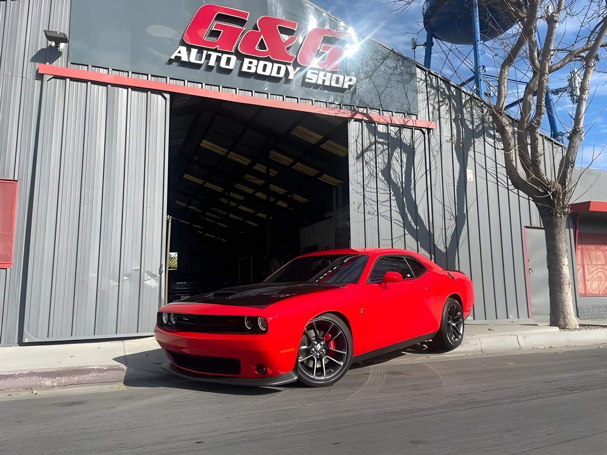
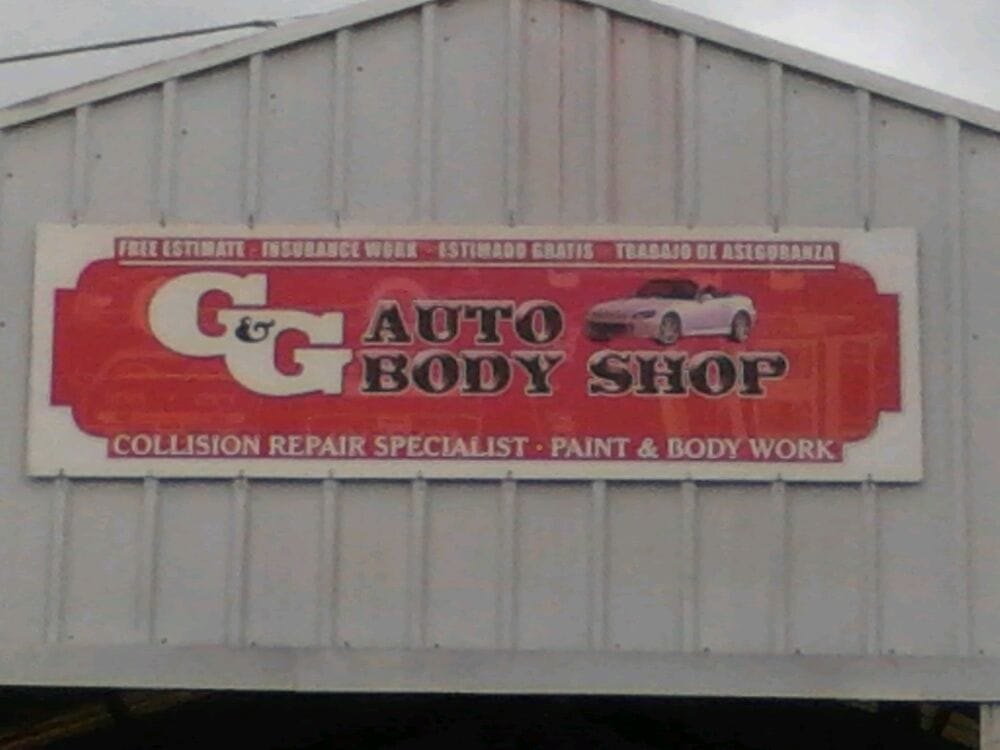
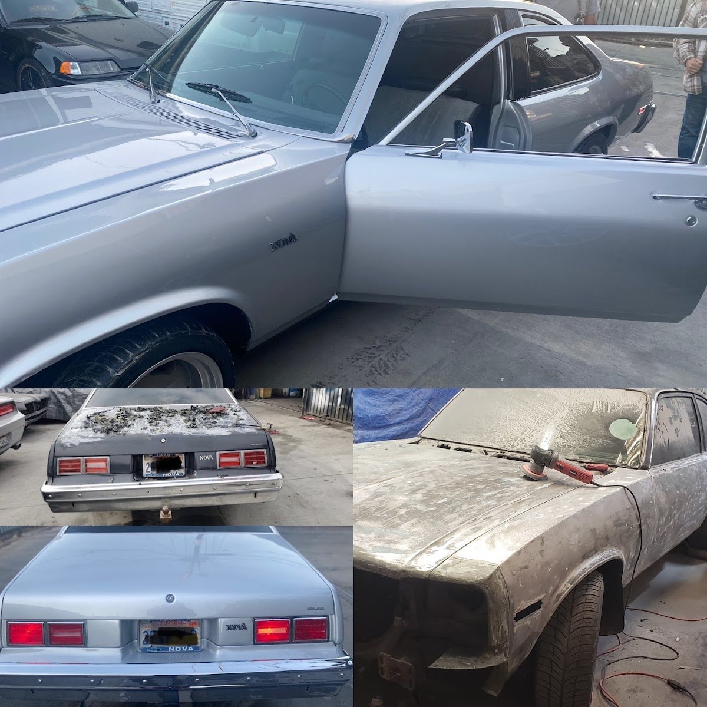
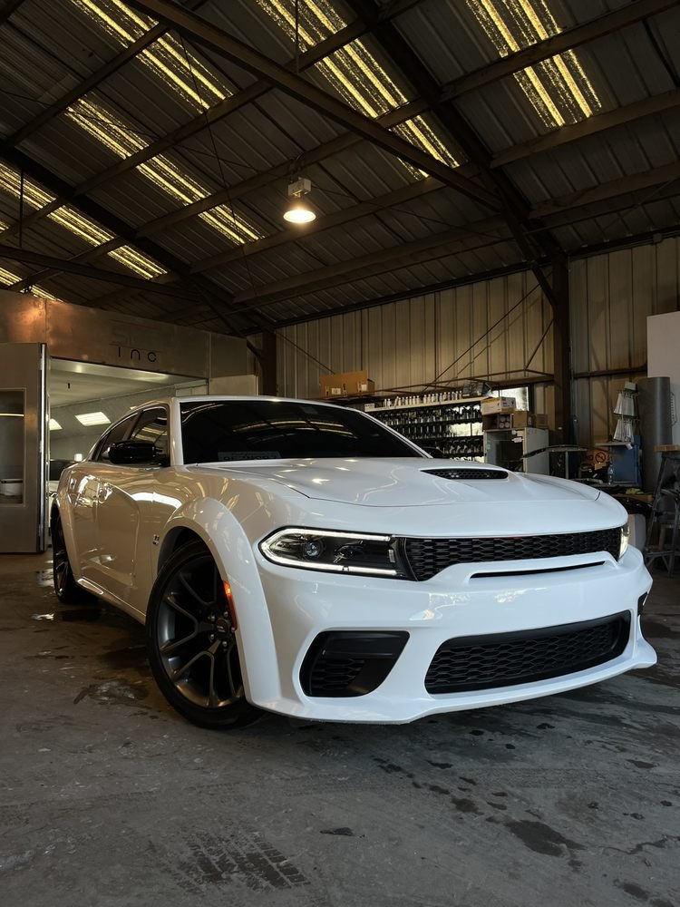
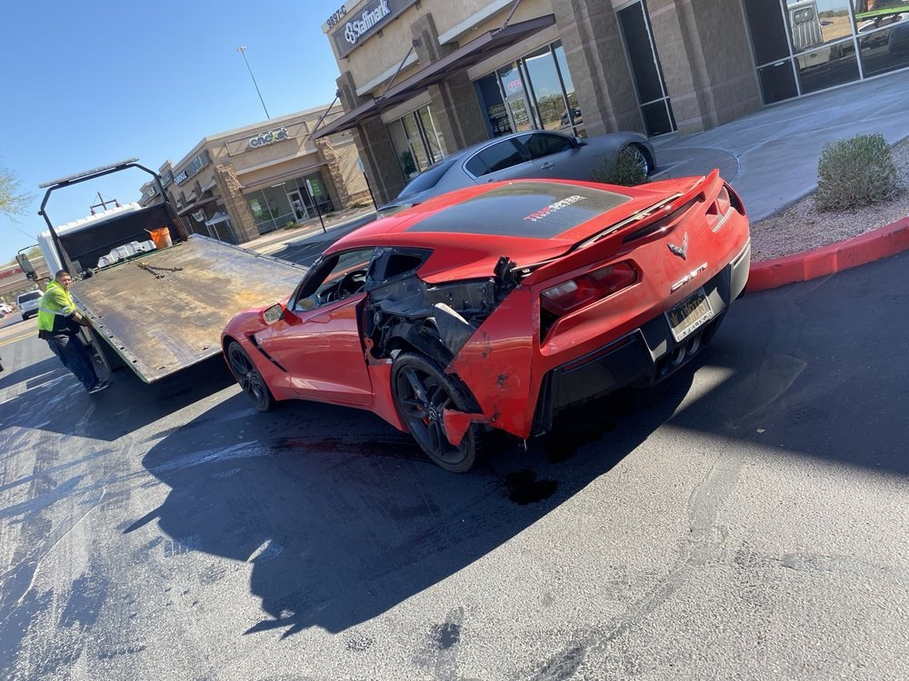

189 five-star reviews, pointing at a scam site. 189 reseñas de cinco estrellas, apuntando a un sitio fraudulento.
A family collision shop on Alameda Street in Lynwood that had already done everything right online — except own the last piece. The website listed on their Yelp had lapsed and been picked up by a domain squatter. This is what I built to replace it. Un taller familiar de colisiones en la calle Alameda de Lynwood que ya había hecho todo bien en línea — menos ser dueño de la última pieza. La página listada en su Yelp se venció y la tomó un revendedor de dominios. Esto es lo que construí para reemplazarla.
- RoleRol
- Research, design & buildInvestigación, diseño y desarrollo
- LocationUbicación
- Lynwood, CA
- StatusEstado
- Preview, not yet liveVista previa, aún no publicado
- Stack
- 1 file · vanilla JS1 archivo · JS puro

The link on their own Yelp page was sending customers to somebody else's ads. El enlace en su propia página de Yelp mandaba a los clientes a los anuncios de otra persona.
Yelp listed gg-autobody-shop.com as the business website. The domain still resolved, but it no longer belonged to the shop — it served a cloaked redirect that probed for ad blockers before forwarding visitors to affiliate spam. Meanwhile Google showed an "Add website" prompt where their link should have been. Two of the biggest sources of local traffic, both leaking.
Yelp mostraba gg-autobody-shop.com como el sitio del negocio. El dominio todavía respondía, pero ya no era del taller — ejecutaba un redirect encubierto que detectaba bloqueadores de anuncios antes de mandar al visitante a publicidad basura. Mientras tanto, Google mostraba un botón de "Agregar sitio web" donde debía ir su enlace. Las dos fuentes más grandes de tráfico local, las dos con fuga.
This is not a shop that ignores the internet. The owner answers every review by hand, keeps Yelp current, and had posted photos the week I looked. The gap was ownership, not effort. No es un taller que ignore el internet. El dueño contesta cada reseña a mano, mantiene Yelp al día y había subido fotos la semana que lo revisé. Lo que faltaba era ser dueño, no esfuerzo.
AudiencePúblico
Someone who just had an accident, is dealing with an insurance adjuster, and is choosing a shop they've never used. Often bilingual — Lynwood is roughly 87% Latino, and the shop's own hand-painted sign already reads "estimado gratis · trabajo de aseguranza." Alguien que acaba de chocar, está lidiando con un ajustador y elige un taller que nunca ha usado. Muchas veces bilingüe — Lynwood es cerca de 87% latino, y el letrero pintado a mano del taller ya dice «estimado gratis · trabajo de aseguranza».
Emotional stateEstado emocional
One of their own reviewers said it better than I could: "There is so much stress that comes with a car accident. The last thing you need to stress about is which body shop to take your car to." That line became the thesis of the whole page. Una de sus clientas lo dijo mejor que yo: «Un accidente trae muchísimo estrés. Lo último que debería preocuparle es a qué taller llevar su carro.» Esa frase se volvió la tesis de toda la página.
The buried assetEl activo enterrado
Reading all 33 Yelp reviews turned up a 5-year warranty on labor and paint — mentioned once, by one customer, as the thing that gave her peace of mind. No competitor nearby advertises anything like it. It was the strongest selling point they had and it appeared nowhere except inside a review nobody scrolls to. Al leer las 33 reseñas de Yelp apareció una garantía de 5 años en mano de obra y pintura — mencionada una sola vez, por una clienta, como lo que le dio tranquilidad. Ningún competidor cercano anuncia algo así. Era su mejor argumento de venta y no aparecía en ningún lado salvo dentro de una reseña que nadie alcanza a leer.
What they specialize inEn qué se especializan
Sorting 81 Yelp photos and 6 Google ones made the pattern obvious: Chargers, Challengers, a Camaro ZL1, a Corvette, a Fox-body Mustang — but also a Porsche Taycan, a Mercedes S-Class and a Tesla. A muscle-car shop that high-end owners also trust. The design leans into that instead of the generic collision-center look. Ordenar 81 fotos de Yelp y 6 de Google dejó claro el patrón: Chargers, Challengers, un Camaro ZL1, un Corvette, un Mustang clásico — pero también un Porsche Taycan, un Mercedes Clase S y un Tesla. Un taller de muscle cars en el que también confían dueños de autos de lujo. El diseño se apoya en eso en vez del look genérico de centro de colisiones.
Five jobs for one page.Cinco tareas para una página.
Stop the leak: give them a link they own to put on Google and Yelp.Cerrar la fuga: darles un enlace propio para poner en Google y Yelp.
Pull the 5-year warranty out of a review and into the hero.Sacar la garantía de 5 años de una reseña y ponerla en el hero.
Show before-and-after, because that is how a body shop actually sells.Mostrar el antes y después, porque así es como realmente vende un taller.
Serve the whole site in English and Spanish, matching their own sign.Servir todo el sitio en inglés y español, igual que su letrero.
Keep call and directions one thumb-tap away from any scroll position.Mantener llamar y cómo llegar a un toque, desde cualquier punto de la página.
Calm competence, not clip-art chrome.Confianza serena, no cromo de catálogo.
The palette came off their signLa paleta salió de su letrero
Their real signage is red lettering with a chrome bevel on black steel. That became the whole system: near-black ground, one red accent, warm amber borrowed from the shop's ceiling lights. Nothing invented.Su letrero real es letra roja con borde cromado sobre acero negro. Eso se volvió todo el sistema: fondo casi negro, un solo acento rojo, y ámbar cálido tomado de las luces del techo del taller. Nada inventado.
"Damage in. Driven out."«Entra dañado. Sale manejando.»
A two-column section: wrecks on the left, finished cars on the right. A Corvette coming off a flatbed sits beside a gleaming Charger. The photos are never claimed as matched pairs — that would be a lie a customer could catch — but the contrast does the selling on its own.Una sección de dos columnas: choques a la izquierda, carros terminados a la derecha. Un Corvette bajando de una grúa junto a un Charger reluciente. Nunca se presentan como pares del mismo carro — eso sería una mentira que un cliente podría descubrir — pero el contraste vende solo.
Dark, because the work is dramaticOscuro, porque el trabajo es dramático
Most body-shop sites are bright blue and stock photography. Theirs is cinematic and quiet, so the cars under warm shop light carry the drama and the typography stays confident instead of shouting.La mayoría de los sitios de talleres son azul brillante y fotos de banco. El suyo es cinematográfico y silencioso, para que los carros bajo la luz cálida del taller lleven el drama y la tipografía se mantenga segura en vez de gritar.
Their words, both languagesSus palabras, en los dos idiomas
The Spanish isn't translated marketing copy — it uses the register their own sign and customers use: aseguranza, estimado gratis, hojalatería, grúa. A whole-site toggle, not a token line in the footer.El español no es publicidad traducida — usa el registro que usan su letrero y sus clientes: aseguranza, estimado gratis, hojalatería, grúa. Un interruptor para todo el sitio, no una línea simbólica en el pie de página.
A working preview, built before the pitch.Una versión funcional, hecha antes de la propuesta.
Finished and running, mobile-first, because that is how somebody standing next to a damaged car will open it. I build these before I call the owner, so the conversation starts with something real instead of a promise. Tap around inside the phone, or open it full-screen.Terminado y funcionando, prioridad móvil, porque así lo va a abrir alguien parado junto a un carro chocado. Construyo esto antes de llamar al dueño, para que la conversación empiece con algo real en vez de una promesa. Explóralo dentro del teléfono o ábrelo en pantalla completa.
Their own photos, checked one by one.Sus propias fotos, revisadas una por una.




Two photos were somebody else's shopDos fotos eran de otro taller
Google's photo strip quietly mixes in neighbouring businesses. Two of the images I pulled turned out to be a "BG Collision Repair" office and an "A-1 Auto Body" storefront at night. Both were caught and discarded before they could ship. Every photo now on the site is verified as G&G's.La tira de fotos de Google mezcla negocios vecinos sin avisar. Dos de las imágenes que bajé resultaron ser una oficina de "BG Collision Repair" y la fachada nocturna de "A-1 Auto Body". Las dos se detectaron y descartaron antes de publicarse. Cada foto en el sitio está verificada como de G&G.
License plates blurredPlacas difuminadas
Three customer plates were legible in the shop's public photos. They're blurred on the site. The owner never asked — it's just not mine to publish, and it's the kind of detail that tells a customer how their car will be treated.Tres placas de clientes se leían en las fotos públicas del taller. En el sitio están difuminadas. El dueño nunca lo pidió — simplemente no me toca publicarlas, y es el tipo de detalle que le dice a un cliente cómo van a tratar su carro.
What changed.Lo que cambió.
| BeforeAntes | AfterDespués | |
|---|---|---|
| Yelp website linkEnlace en Yelp | A hijacked domain redirecting to affiliate spam.Un dominio secuestrado que redirigía a publicidad basura. | A site they own, at an address that can't lapse out from under them.Un sitio propio, en una dirección que no se les puede vencer. |
| Google listingFicha de Google | An "Add website" prompt where the link should be.Un botón de "Agregar sitio web" donde debía ir el enlace. | A real link, plus a verified review CTA pointing at their profile.Un enlace real, más un CTA de reseñas verificado hacia su perfil. |
| The 5-year warrantyLa garantía de 5 años | Mentioned once, inside a single Yelp review.Mencionada una vez, dentro de una sola reseña de Yelp. | In the hero, the trust strip and its own section.En el hero, la tira de confianza y su propia sección. |
| Social proofPrueba social | 189 reviews split across two platforms you have to go find.189 reseñas repartidas en dos plataformas que hay que ir a buscar. | Both ratings in the hero, Google and Yelp quotes interleaved.Las dos calificaciones en el hero, reseñas de Google y Yelp intercaladas. |
| Before-and-after workAntes y después | Buried in an unsorted gallery of 81 photos.Enterrado en una galería sin orden de 81 fotos. | A "Damage in / Driven out" section and a restoration feature.Una sección «Entra dañado / Sale manejando» y una restauración destacada. |
| SpanishEspañol | Only on the physical sign outside the building.Solo en el letrero físico afuera del edificio. | The entire site, on a toggle, in their customers' register.Todo el sitio completo, con un interruptor, en el habla de sus clientes. |
| Customer privacyPrivacidad | Three readable license plates in public photos.Tres placas legibles en fotos públicas. | Blurred.Difuminadas. |
One file, no buildUn archivo, sin build
A single dependency-free index.html with inlined CSS and vanilla JS. No framework, no bundler, deploys straight to GitHub Pages.Un solo index.html sin dependencias, con CSS en línea y JS puro. Sin framework, sin bundler, se publica directo en GitHub Pages.
Progress traces the navEl progreso recorre la barra
Scroll position draws itself around the outline of the nav pill. The SVG is sized in real pixels to the nav's border box via a ResizeObserver, so the capsule corners match the CSS radius exactly — a scaled viewBox turns them into ellipses.La posición de scroll se dibuja alrededor del contorno de la barra. El SVG se dimensiona en píxeles reales al borde de la barra con un ResizeObserver, para que las esquinas coincidan exactamente con el radio del CSS — un viewBox escalado las convierte en elipses.
Bilingual by toggleBilingüe con un toque
A CSS-driven data-lang switch shows and hides EN/ES, persisted to localStorage and auto-detected from the browser on first visit.Un interruptor data-lang en CSS muestra y oculta EN/ES, guardado en localStorage y detectado del navegador en la primera visita.
Built for a thumbHecho para un pulgar
A fixed Call / Directions bar, a section menu that closes on tap, scrim, Escape and breakpoint change, inline SVG icons so nothing renders as colour emoji, and lazy-loaded imagery throughout.Una barra fija de Llamar / Cómo llegar, un menú de secciones que se cierra al tocar, con el fondo, con Escape y al cambiar de tamaño, íconos SVG en línea para que nada salga como emoji de color, e imágenes con carga diferida.
Somebody standing next to a wrecked car learns three things before they scroll: this shop is trusted, the work is guaranteed for five years, and here is the phone number.Alguien parado junto a un carro chocado se entera de tres cosas antes de desplazarse: este taller es de confianza, el trabajo tiene garantía de cinco años, y aquí está el teléfono.
And the link on their Yelp page finally goes somewhere that belongs to them.Y el enlace en su página de Yelp por fin lleva a un lugar que es suyo.